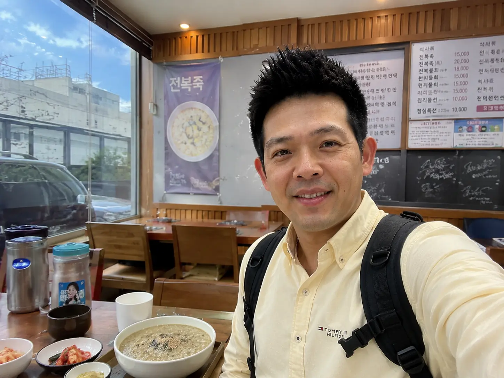

出發前必看：濟州島租車、駕照與交通安全守則
濟州島大眾運輸工具（公車）班次較少且間隔時間長，租車自駕環島（一圈約 181-200 公里）是最有效率、最舒適的玩法。以下為出發前必讀的駕照與租賃細節：

🗺️ 經典濟州島3天2夜自駕環島行程
專為首訪自駕規劃的經典路線，暢遊火山、彩繪村與湛藍海岸
世界自然遺產！由海底火山爆發形成的巨型碗狀火山口。沿著階梯步道約 25-30 分鐘即可輕鬆攻頂，俯瞰整片蔚藍海洋與濟州陸地交會的壯麗奇景（門票 ₩5,000）。
從城山港搭乘大型渡輪（船程 15 分鐘，票價來回 ₩3,500）抵達牛島。島上可以租借雙人小電動車（需具備國際駕照）或腳踏車，大約 2-3 小時即可繞島一圈，沿途吹風看海、吃超有名濃郁的「花生冰淇淋」。
返回本島後，開車前往不遠處的涉地可支。這裡是無數韓劇熱門取景地（如《All In》），海邊矗立著白色燈塔，四周被鮮綠的草原包圍，在黃昏的晚霞照耀下美不勝收。
第一晚的重頭戲！在城山附近挑選一家人氣極高的黑豬肉烤肉店，厚實、Q彈且多汁的五花肉與梅花肉在鐵板上滋滋作響，佐以濟州特製的銀魚醬（一人份約 ₩15,000 - 25,000）。
挑戰韓國最高峰（1,947 公尺）！如果體力充沛，可以提早預約「城板岳」或「觀音寺」路線挑戰登頂（來回約 5-6 小時）；若想安排輕鬆愜意的半日郊遊，極力推薦走「御里牧路線」或「靈室路線」至威勢岳，來回僅需 3-4 小時，沿途滿是高山杜鵑（春）或白雪皚皚（冬）的美景。
前往濟州島南部，欣賞拔地而起的鐘狀火山「山房山」，並探訪山腳下的「龍頭海岸」。這裡有著被海浪經年累月侵蝕而成的特殊砂岩斷崖，走在天然石道上，看海女婆婆現場兜售現撈海參，地质風貌令人驚嘆。
南部大型度假勝地！包含神聖浪漫的「天帝淵瀑布」、好拍有趣的「泰迪熊博物館」、巨型奇幻的「信不信由你博物館」，以及展示各類奇花異草的「如美地植物園」。非常適合合影與親子出遊。
夜晚抵達西歸浦，點一份料超滿、活生生的海鮮大砂鍋（海物湯）。肥美鮑魚、手掌大扇貝、八爪魚、螃蟹和各類貝類堆疊如山，湯頭鮮美無比（雙人預算約 ₩30,000 - 45,000）。
走進寬廣的「翰林公園」（門票 ₩10,000），觀賞熱帶植物與天然熔岩雙窟（峽才雙龍窟）。隨後漫步至相鄰的「挾才海水浴場」，這裡有著濟州島最細緻雪白的沙灘以及清澈見底的 Tiffany 藍漸層海水，對望不遠處的飛揚島。
沿著西部海岸線開車抵達涯月咖啡街（擁有無數文青玻璃屋與紅色海景燈塔）。這裡也是 GD 咖啡廳（Monsant de Aewol）以及諸多知名網紅咖啡廳的聚集地，點一杯咖啡、吃一塊紅豆柑橘鬆餅，拍照極為精緻、氛圍拉滿。
在返程前往機場前，開車回到濟州市區的「東門市場」大採購！帶上超好吃的漢拏山柑橘巧克力、新鮮柑橘乾、海苔，以及品嚐市集小吃如黑豬肉串燒、手撕黑豬肉包等。
開車返回濟州國際機場附近的租車點辦理還車（切記加滿油）。隨後搭乘免費接駁巴士前往機場大廳辦理行李託運，搭乘班機滿載美好回憶返回家園。
💰 2026 濟州島3天2夜自駕費用試算器
自駕遊費用怎麼估？我們為您量身打造這款「濟州島自駕費用計算器」，一鍵設定人數、匯率、機票艙等、租車等級與住宿美食，即時算出台幣 (TWD) 與韓元 (KRW) 的精準花費！
🍽️ 舌尖上的火山島：濟州必吃 5 大特產美食
濟州島獨特的黑火山土壤與純淨海域，孕育出冠絕韓國的頂級食材

均在路上實拍：濟州島海女海鮮與頂級黑五花肉烤肉
1. 濟州頂級黑豬肉烤肉 (흑돼지)
濟州島最指標性的頂級肉食！黑豬生活於純淨山區，肉質結實Q彈、油脂香甜且完全沒有任何腥味。在烤盤上烤至金黃酥脆後，沾上滾燙的「特製鯷魚魚露醬」包在生菜裡，滋味堪稱一絕。
2. 海女現熬鲍魚粥 (전복죽)
傳統海女婆婆清晨現撈的活鮑魚！將鮑魚內臟與優質糯米在砂鍋中慢火研磨細熬，熬出帶有濃郁墨綠色、香氣撲鼻的溫潤熱粥。鮑魚片嚼勁十足，鮮甜滋補。
3. 漢拏峰柑橘 (한라봉)
因果頂部突起酷似漢拏山山峰而得名，是濟州島名揚韓國的柑橘之王。果肉極厚、多汁且甜度驚人。路邊攤常見現榨的 100% 柑橘汁與特色柑橘冰淇淋，果香滿溢。
4. 澎湃生猛海鮮鍋 (해물탕)
不加任何人工味精，僅用昆布湯底。鍋中放入活生生的八爪魚、碩大的野生鮑魚、螃蟹、大蝦、章魚、蛤蜊等。海味精華完全融入高湯，喝上一口便覺得極致滿足。
5. Osulloc 綠茶與牛島花生冰淇淋
濟州島的花生冰淇淋是用牛島當地特產的小粒花生研磨製成，香氣極其濃郁、入口即化且甜而不膩，是夏天消暑的首選；此外，位於西部的 Osulloc 綠茶博物館 亦是甜點朝聖地，其抹茶捲蛋糕、鮮抹茶拿鐵與純綠茶霜淇淋也是抹茶控不可錯過的奢華滋味。
❓ 濟州島自駕環島旅遊 常見問題 FAQ
解答自駕新手、預算編列、天氣與交通規章的疑惑
台灣駕照持有者在濟州租車，必須備妥：1. 台灣駕照正本 2. 國際駕照正本（在台灣監理所辦理） 3. 韓文公證譯本（建議攜帶以防部分店家要求）。三者缺一不可，否則租車公司有權拒絕取車且不予退款，請出發前務必確認證件效期。
3天2夜足夠走完最精華、最經典的景點（例如東部城山日出峰 + 牛島一日遊，西部挾才海灘與涯月咖啡街，以及南部西歸浦），但時間上會稍顯緊湊。最推薦安排4天3夜，這樣不僅能多出一整天享受中文度假區和正房瀑布，也更有餘裕深入漢拏山或去Osulloc茶園。
濟州島四季皆美：春季（4月）滿山遍野黃澄澄的油菜花與粉嫩櫻花交相輝映；夏季（7-8月）挾才海水浴場與中文沙灘是戲水勝地；秋季（10-11月）金黃色的芒草、楓葉漫天，且氣候涼爽宜人，是自駕出遊的「黃金旺季」；冬季（12-2月）則能觀賞漢拏山的絕美霧淞雪景，唯海岸風大氣溫偏低。
前往牛島需要開車至「城山港」，在售票處填寫乘船申報單並出示護照，購票（來回船票 ₩3,500/人），搭乘渡輪 15 分鐘即可抵達。自駕車雖然能開上渡輪（需額外收費且有限制），但極力推薦將車停在城山港，登島後再租借超萌的雙人小電動車或腳踏車，環島更為便捷。
2026 韓國玩樂必備：WOWPASS 申辦與地鐵/公車無腦乘車地圖 PDF 隨行包
內含 T-money、WOWPASS、氣候同行卡三大票券最省預算拆解、最新退稅與自動退稅機（KIOSK）流程詳解、以及首爾/釜山私房美食中韓對照表。手機離線直接看，不花一分冤枉錢！